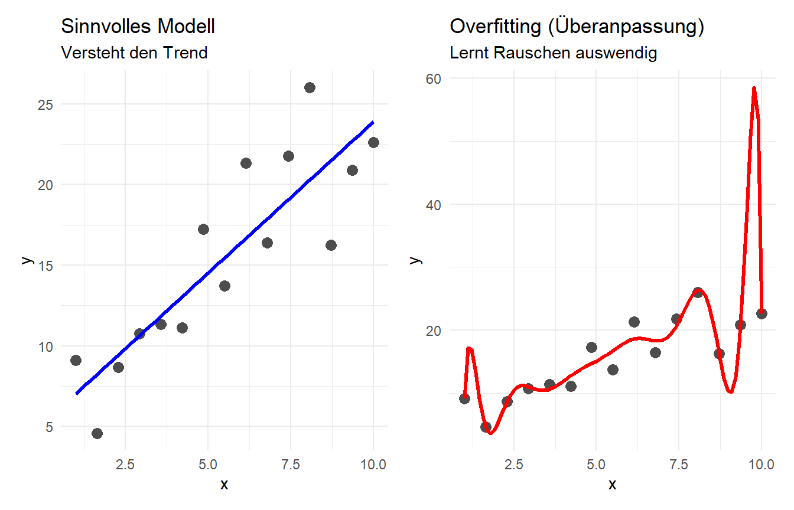

5 Modellselektion
HinweisKompetenzziele für dieses Kapitel
Nach der Bearbeitung dieses Kapitels können Sie:
- Die Overfitting-Falle erkennen: Verstehen, warum das Hinzufügen von immer mehr Variablen die Vorhersagekraft eines Modells auf neuen Daten zerstören kann.
- Metriken zur Modellauswahl nutzen: Das Angepasste \(R^2\) (für OLS) und das AIC (für logistische Regression) anwenden, um sparsame Modelle zu identifizieren.
- Kreuzvalidierung (Cross-Validation) anwenden: Den \(k\)-fachen Kreuzvalidierungs-Workflow in R programmieren, um die echte, out-of-sample Vorhersagegüte eines Modells zu messen.
5.1 Das Problem: Overfitting (Überanpassung)
Ein weit verbreiteter Irrtum in der Datenanalyse ist: “Je mehr Variablen ich in mein Modell werfe, desto genauer wird meine Vorhersage.”
Mathematisch gesehen steigt das reguläre Bestimmtheitsmaß (\(R^2\)) immer an (oder bleibt im schlechtesten Fall gleich), wenn wir einen neuen Prädiktor hinzufügen – selbst wenn dieser Prädiktor absoluter Quatsch ist. Das Modell beginnt, das statistische Rauschen der spezifischen Stichprobe auswendig zu lernen, anstatt den echten zugrundeliegenden Trend zu verstehen. Diesen Effekt nennt man Overfitting.
5.2 Kennzahlen für die Modellauswahl
Um Overfitting zu verhindern, brauchen wir Metriken, die das Modell “bestrafen”, wenn unnötige Variablen hinzugefügt werden.
5.2.1 1. Das Angepasste \(R^2\) (Für Lineare Regression)
Während das normale \(R^2\) bei jedem neuen Prädiktor wächst, korrigiert das Angepasste \(R^2\) (\(R^2_{adj}\)) diesen Wert nach unten, basierend auf der Anzahl der Variablen im Modell (\(k\)).
- Fügen wir eine Variable hinzu, die das Modell stark verbessert, steigt das \(R^2_{adj}\).
- Fügen wir eine nutzlose Variable hinzu, greift die mathematische Strafe, und das \(R^2_{adj}\) sinkt.
Bei der Rückwärtsselektion (Backward Selection) starten wir mit dem vollen Modell (alle Variablen) und entfernen schrittweise die Variablen, die das \(R^2_{adj}\) nicht verbessern oder sogar verschlechtern.
5.2.2 2. Das AIC (Für Logistische Regression)
Bei der logistischen Regression (siehe Kapitel 4) existiert kein klassisches \(R^2\). Stattdessen nutzen wir das Akaike-Informationskriterium (AIC).
- Auch das AIC bestraft Komplexität (Anzahl der Variablen).
- Regel: Im Gegensatz zum \(R^2\) (wo höher besser ist), gilt beim AIC: Je kleiner der AIC-Wert, desto besser das Modell.
Code
# Beispiel für den AIC-Vergleich bei der Spam-Erkennung
modell_spam_klein <- glm(spam ~ to_multiple, data = email, family = "binomial")
modell_spam_gross <- glm(spam ~ to_multiple + cc + urgent_subj, data = email, family = "binomial")
# glance() gibt uns die Metriken aus
glance(modell_spam_klein) |> select(AIC, nobs)# A tibble: 1 × 2
AIC nobs
<dbl> <int>
1 2376. 3921Code
glance(modell_spam_gross) |> select(AIC, nobs)# A tibble: 1 × 2
AIC nobs
<dbl> <int>
1 2368. 3921Das größere Modell hat den kleineren AIC-Wert. Es ist trotz der Strafe für mehr Variablen das bessere Modell.
5.3 Die ultimative Prüfung: Kreuzvalidierung (Cross-Validation)
Das Angepasste \(R^2\) und das AIC sind gute theoretische Hilfsmittel. Die harte Realität in der Data Science ist jedoch eine andere: Wie gut ist mein Modell bei Daten, die es noch nie zuvor gesehen hat?
Die Lösung heißt Kreuzvalidierung (CV). Anstatt das Modell auf allen Daten zu trainieren und zu testen (was Schummeln wäre), teilen wir die Daten auf:
- Trainingsdaten: Ein Teil der Daten, auf dem wir die Modellparameter (\(b_0, b_1, \dots\)) schätzen.
- Testdaten (Holdout): Ein anderer Teil, an dem wir prüfen, wie groß unsere Vorhersagefehler (\(e = y - \hat{y}\)) tatsächlich sind.
5.3.1 Workflow: \(k\)-fache Kreuzvalidierung
Bei der \(k\)-fachen CV (z.B. \(k=4\)) teilen wir die Daten in 4 gleich große Blöcke (“Folds”). Wir trainieren das Modell auf 3 Blöcken und testen es am 4. Block. Das wiederholen wir 4-mal, sodass jeder Block genau einmal der Test-Block war.
5.3.2 Praxis-Beispiel: Pinguin-Körpermasse
Wir wollen die Masse von Pinguinen (body_mass_g) vorhersagen. * Modell A (Klein): Nutzt nur die Schnabellänge (bill_length_mm). * Modell B (Groß): Nutzt Schnabellänge, Schnabeltiefe, Flossenlänge, Geschlecht und Spezies.
Welches Modell liefert in der Realität die besseren Vorhersagen? Wir programmieren einen 4-fachen CV-Workflow für Modell B:
Code
set.seed(47)
# 1. Daten in 4 Folds aufteilen (erzeugt eine Liste mit Zeilen-Indizes für jeden Fold)
folds <- createFolds(penguins$body_mass_g, k = 4)
# 2. Leeren Container für unsere Ergebnisse vorbereiten
cv_ergebnisse <- data.frame()
# 3. Der CV-Loop: Für jeden der 4 Folds einmal durchlaufen
for(i in 1:4) {
test_indizes <- folds[[i]]
# Daten aufteilen
test_daten <- penguins[test_indizes, ]
train_daten <- penguins[-test_indizes, ] # Minus bedeutet: Alles AUßER test_indizes
# Modell NUR auf den Trainingsdaten anpassen
modell_cv <- lm(body_mass_g ~ bill_length_mm + bill_depth_mm + flipper_length_mm + sex + species,
data = train_daten)
# Vorhersage für die unabhängigen Testdaten machen
vorhersage <- predict(modell_cv, newdata = test_daten)
# Ergebnisse speichern
fold_ergebnis <- data.frame(
Fold = paste("Fold", i),
Beobachtet = test_daten$body_mass_g,
Vorhergesagt = vorhersage,
Fehler = test_daten$body_mass_g - vorhersage
)
cv_ergebnisse <- bind_rows(cv_ergebnisse, fold_ergebnis)
}
# 4. Den Gesamtfehler berechnen (Kreuzvalidierte Summe der Fehlerquadrate - CV SSE)
cv_sse_gross <- sum(cv_ergebnisse$Fehler^2)Würden wir diesen Code für Modell A (nur Schnabellänge) ausführen, erhielten wir einen Gesamtfehler (CV SSE) von ca. 141.552.000. Der Gesamtfehler für unser Modell B (aus dem Code oben) beträgt hingegen nur ca. 27.728.000.
Der Vorhersagefehler ist massiv geschrumpft! Das größere Modell ist hier eindeutig überlegen und leidet nicht unter Overfitting.
5.4 Fazit: Die Strategie eines Data Scientists
Modellbildung ist keine Einbahnstraße. Ein professioneller Workflow sieht so aus:
- Fundament: Starten Sie mit der Fachlogik (Welche Variablen ergeben theoretisch Sinn?).
- Filterung: Werfen Sie Variablen raus, die das Angepasste \(R^2\) verschlechtern oder den AIC in die Höhe treiben.
- Realitätscheck: Nutzen Sie Kreuzvalidierung, um die endgültige Vorhersagekraft (bei numerischen Zielen den CV SSE, bei logistischen Zielen die Accuracy) zu messen und Ihr Modell vor der Praxis zu schützen.